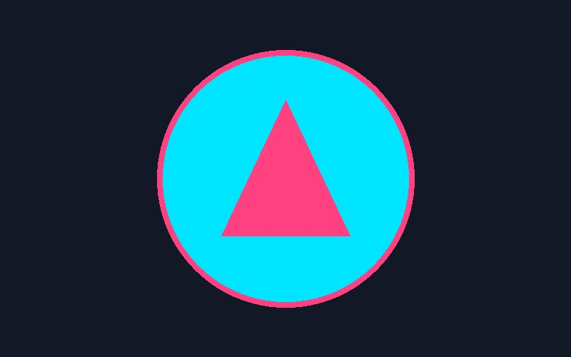

Andrés Sanmartín
Motion Graphics 2D, Diseño Audiovisual y Arte Generativo
Estudio creativo de Diseño Multimedia enfocado en motion graphics 2D/3D, arte interactivo, paisajes sonoros y desarrollo de experiencias digitales.
KRONOS STUDIO es una iniciativa creativa desarrollada en Cuenca, Ecuador, en el marco de la carrera de Diseño Multimedia de la Universidad Politécnica Salesiana. Combina narrativa visual, programación creativa y producción sonora para transformar ideas en proyectos digitales memorables.

Explora el portafolio individual, proyectos multimedia y formulario de contacto:

Motion Graphics 2D, Diseño Audiovisual y Arte Generativo
Animación 2D, Storyboard y Motion Graphics
Cada idea cuenta. Comparte tu experiencia, déjanos tus comentarios y ayúdanos a seguir evolucionando en el mundo del diseño multimedia.